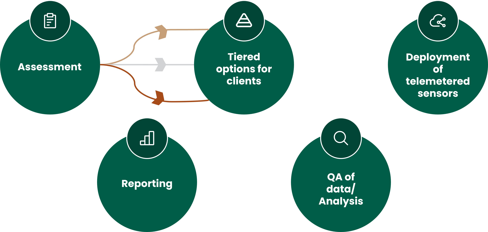

01
Tiered for Every Project
Tiered options match your budget, project stage, and assurance requirements, so you only pay for what your site needs.
Science-led monitoring you can trust, no matter the budget.
To enable every peatland and woodland carbon project to have access to scientifically backed monitoring methodologies, regardless of budget.
Tiered options match your budget, project stage, and assurance requirements, so you only pay for what your site needs.
Telemetered sensor deployment and adaptive monitoring allow relocation over time, improving coverage while keeping resources focused and efficient.
Our team works at the cutting edge of peatland hydrology and carbon science, translating robust methods into practical field delivery.
Cwiri delivers tiered, adaptive monitoring services built around telemetered sensors, quality-assured data, and transparent reporting. Every setup is matched to your project budget, site conditions, and monitoring priorities.

We assess your site context, goals, and existing data to define what level of monitoring and assurance is needed.
We recommend the most suitable tier so delivery aligns with your budget, timeline, and reporting requirements.
Our field team deploys robust sensor networks designed for remote landscapes, with adaptive relocation where it improves value.
We run structured QA/QC and analysis workflows to produce dependable datasets and model outputs you can trust.
You receive transparent, repeatable reporting aligned with project management and verification expectations.
As more data comes in, we iteratively refine sensor placement, model inputs, and analytics to keep outputs accurate and cost-efficient as over time.
Supported by